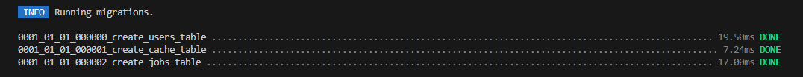

UD6.3 Migrations


- Introduction
- Migration Structure
- Updating Tables
- Renaming / Dropping Tables
- Available Column Types
- Column Modifiers
- Modifying Columns
- Renaming Columns
- Dropping Columns
A. Migrations
1. Introduction
Migrations are like version control for your database, allowing your team to define and share the application's database schema definition. If you have ever had to tell a teammate to manually add a column to their local database schema after pulling in your changes from source control, you've faced the problem that database migrations solve.
The Laravel Schema facade provides database agnostic support for creating and manipulating tables across all of Laravel's supported database systems.
Typically, migrations will use this facade to create and modify database tables and columns.
Sqlite default Database
Laravel configures itsdatabase settings through the config/database.php file, where multiple database connections can be defined, including MySQL, PostgreSQL, SQLite, and SQL Server. By default, Laravel uses SQLite with the database path set to database/database.sqlite, especially when the .env file specifies DB_CONNECTION=sqlite. This file-based database setup is convenient for local development and testing, requiring minimal configuration. Laravel uses environment variables (.env) to determine the active connection and credentials, allowing seamless switching between different database systems without modifying the codebase.
2. Generating Migrations
- You may use the
make:migrationArtisan command to generate a database migration. - The new migration will be placed in your
database/migrationsdirectory. - Each migration filename contains a timestamp that allows Laravel to determine the order of the migrations:
- Let´s create a project to see this
UD6 Laravel\sesion3> composer create-project laravel/laravel 3migrationscd migrations

php artisan make:migration create_flights_table
Laravel will use the name of the migration to attempt to guess the name of the table and whether or not the migration will be creating a new table.
- If Laravel is able to determine the table name from the migration name, Laravel will pre-fill the generated migration file with the specified table.
- Otherwise, you may simply specify the table in the migration file manually.

If you would like to specify a custom path for the generated migration, you may use the --path option when executing the make:migration command.
Squashing Migrations
As you build your application, you may accumulate more and more migrations over time. This can lead to your database/migrations directory becoming bloated with potentially hundreds of migrations. If you would like, you may "squash" your migrations into a single SQL file. To get started, execute the schema:dump command:
php artisan schema:dump
# Dump the current database schema and prune all existing migrations...
php artisan schema:dump --prune
... see documentation for more info.
3. Migration Structure
A migration class contains two methods: up and down.
- The
upmethod is used to add new tables, columns, or indexes to your database, while - the
downmethod should reverse the operations performed by theupmethod.
Within both of these methods, you may use the Laravel schema builder to expressively create and modify tables. To learn about all of the methods available on the Schema builder, check out its documentation. For example, the following migration creates a flights table:
<?php
use Illuminate\Database\Migrations\Migration;
use Illuminate\Database\Schema\Blueprint;
use Illuminate\Support\Facades\Schema;
return new class extends Migration
{
/**
* Run the migrations.
*/
public function up(): void
{
Schema::create('flights', function (Blueprint $table) {
$table->id();
$table->string('name');
$table->string('airline');
$table->timestamps();
});
}
/**
* Reverse the migrations.
*/
public function down(): void
{
Schema::drop('flights');
}
};
Setting the Migration Connection
If your migration will be interacting with a database connection other than your application's default database connection, you should set the $connection property of your migration:
/**
* The database connection that should be used by the migration.
*
* @var string
*/
protected $connection = 'pgsql';
/**
* Run the migrations.
*/
public function up(): void
{
// ...
}
Skipping Migrations
Sometimes a migration might be meant to support a feature that is not yet active and you do not want it to run yet.
- In this case you may define a
shouldRunmethod on the migration. If theshouldRunmethod returnsfalse, the migration will be skipped:
use App\Models\Flights;
use Laravel\Pennant\Feature;
/**
* Determine if this migration should run.
*/
public function shouldRun(): bool
{
return Feature::active(Flights::class);
}
4. Running Migrations
To run all of your outstanding migrations, execute the migrate Artisan command:
php artisan migrate

If you would like to see which migrations have run thus far, you may use the migrate:status Artisan command:
php artisan migrate:status
If you would like to see the SQL statements that will be executed by the migrations without actually running them, you may provide the --pretend flag to the migrate command:
php artisan migrate --pretend
Isolating Migration Execution
If you are deploying your application across multiple servers and running migrations as part of your deployment process, you likely do not want two servers attempting to migrate the database at the same time. To avoid this, you may use the isolated option when invoking the migrate command.
See documentation for more information.
Forcing Migrations to Run in Production
Some migration operations are destructive, which means they may cause you to lose data. In order to protect you from running these commands against your production database, you will be prompted for confirmation before the commands are executed. To force the commands to run without a prompt, use the --force flag:
php artisan migrate --force
<a name="rolling-back-migrations"></a>
Rolling Back Migrations
To roll back the latest migration operation, you may use the rollback Artisan command. This command rolls back the last "batch" of migrations, which may include multiple migration files:
php artisan migrate:rollback
You may roll back a limited number of migrations by providing the step option to the rollback command. For example, the following command will roll back the last five migrations:
php artisan migrate:rollback --step=5
You may roll back a specific "batch" of migrations by providing the batch option to the rollback command, where the batch option corresponds to a batch value within your application's migrations database table. For example, the following command will roll back all migrations in batch three:
php artisan migrate:rollback --batch=3
If you would like to see the SQL statements that will be executed by the migrations without actually running them, you may provide the --pretend flag to the migrate:rollback command:
php artisan migrate:rollback --pretend
The migrate:reset command will roll back all of your application's migrations:
php artisan migrate:reset
<a name="roll-back-migrate-using-a-single-command"></a>
Roll Back and Migrate Using a Single Command
The migrate:refresh command will roll back all of your migrations and then execute the migrate command. This command effectively re-creates your entire database:
php artisan migrate:refresh
# Refresh the database and run all database seeds...
php artisan migrate:refresh --seed
You may roll back and re-migrate a limited number of migrations by providing the step option to the refresh command. For example, the following command will roll back and re-migrate the last five migrations:
php artisan migrate:refresh --step=5
<a name="drop-all-tables-migrate"></a>
Drop All Tables and Migrate
The migrate:fresh command will drop all tables from the database and then execute the migrate command:
php artisan migrate:fresh
php artisan migrate:fresh --seed
By default, the migrate:fresh command only drops tables from the default database connection. However, you may use the --database option to specify the database connection that should be migrated. The database connection name should correspond to a connection defined in your application's database configuration file:
php artisan migrate:fresh --database=admin
[!WARNING] The
migrate:freshcommand will drop all database tables regardless of their prefix. This command should be used with caution when developing on a database that is shared with other applications.
5. Tables

Creating Tables
To create a new database table, use the create method on the Schema facade. The create method accepts two arguments: the first is the name of the table, while the second is a closure which receives a Blueprint object that may be used to define the new table:
use Illuminate\Database\Schema\Blueprint;
use Illuminate\Support\Facades\Schema;
Schema::create('users', function (Blueprint $table) {
$table->id();
$table->string('name');
$table->string('email');
$table->timestamps();
});
When creating the table, you may use any of the schema builder's column methods to define the table's columns.
<a name="determining-table-column-existence"></a>
Determining Table / Column Existence
You may determine the existence of a table, column, or index using the hasTable, hasColumn, and hasIndex methods:
if (Schema::hasTable('users')) {
// The "users" table exists...
}
if (Schema::hasColumn('users', 'email')) {
// The "users" table exists and has an "email" column...
}
if (Schema::hasIndex('users', ['email'], 'unique')) {
// The "users" table exists and has a unique index on the "email" column...
}
<a name="database-connection-table-options"></a>
Database Connection and Table Options
If you want to perform a schema operation on a database connection that is not your application's default connection, use the connection method:
Schema::connection('sqlite')->create('users', function (Blueprint $table) {
$table->id();
});
In addition, a few other properties and methods may be used to define other aspects of the table's creation. The engine property may be used to specify the table's storage engine when using MariaDB or MySQL:
Schema::create('users', function (Blueprint $table) {
$table->engine('InnoDB');
// ...
});
The charset and collation properties may be used to specify the character set and collation for the created table when using MariaDB or MySQL:
Schema::create('users', function (Blueprint $table) {
$table->charset('utf8mb4');
$table->collation('utf8mb4_unicode_ci');
// ...
});
The temporary method may be used to indicate that the table should be "temporary". Temporary tables are only visible to the current connection's database session and are dropped automatically when the connection is closed:
Schema::create('calculations', function (Blueprint $table) {
$table->temporary();
// ...
});
If you would like to add a "comment" to a database table, you may invoke the comment method on the table instance. Table comments are currently only supported by MariaDB, MySQL, and PostgreSQL:
Schema::create('calculations', function (Blueprint $table) {
$table->comment('Business calculations');
// ...
});
<a name="updating-tables"></a>
Updating Tables
The table method on the Schema facade may be used to update existing tables. Like the create method, the table method accepts two arguments: the name of the table and a closure that receives a Blueprint instance you may use to add columns or indexes to the table:
use Illuminate\Database\Schema\Blueprint;
use Illuminate\Support\Facades\Schema;
Schema::table('users', function (Blueprint $table) {
$table->integer('votes');
});
<a name="renaming-and-dropping-tables"></a>
Renaming / Dropping Tables
To rename an existing database table, use the rename method:
use Illuminate\Support\Facades\Schema;
Schema::rename($from, $to);
To drop an existing table, you may use the drop or dropIfExists methods:
Schema::drop('users');
Schema::dropIfExists('users');
<a name="renaming-tables-with-foreign-keys"></a>
Renaming Tables With Foreign Keys
Before renaming a table, you should verify that any foreign key constraints on the table have an explicit name in your migration files instead of letting Laravel assign a convention based name. Otherwise, the foreign key constraint name will refer to the old table name.
<a name="columns"></a>
6. Columns
<a name="creating-columns"></a>
Creating Columns
The table method on the Schema facade may be used to update existing tables. Like the create method, the table method accepts two arguments: the name of the table and a closure that receives an Illuminate\Database\Schema\Blueprint instance you may use to add columns to the table:
use Illuminate\Database\Schema\Blueprint;
use Illuminate\Support\Facades\Schema;
Schema::table('users', function (Blueprint $table) {
$table->integer('votes');
});
<a name="available-column-types"></a>
Available Column Types
The schema builder blueprint offers a variety of methods that correspond to the different types of columns you can add to your database tables. Each of the available methods are listed in the table below:
Visit the documentation
Column Modifiers
In addition to the column types listed above, there are several column "modifiers" you may use when adding a column to a database table. For example, to make the column "nullable", you may use the nullable method:
use Illuminate\Database\Schema\Blueprint;
use Illuminate\Support\Facades\Schema;
Schema::table('users', function (Blueprint $table) {
$table->string('email')->nullable();
});
The following table contains all of the available column modifiers. This list does not include index modifiers:
<a name="default-expressions"></a>
Default Expressions
The default modifier accepts a value or an Illuminate\Database\Query\Expression instance. Using an Expression instance will prevent Laravel from wrapping the value in quotes and allow you to use database specific functions. One situation where this is particularly useful is when you need to assign default values to JSON columns:
<?php
use Illuminate\Support\Facades\Schema;
use Illuminate\Database\Schema\Blueprint;
use Illuminate\Database\Query\Expression;
use Illuminate\Database\Migrations\Migration;
return new class extends Migration
{
/**
* Run the migrations.
*/
public function up(): void
{
Schema::create('flights', function (Blueprint $table) {
$table->id();
$table->json('movies')->default(new Expression('(JSON_ARRAY())'));
$table->timestamps();
});
}
};
[!WARNING] Support for default expressions depends on your database driver, database version, and the field type. Please refer to your database's documentation.
<a name="column-order"></a>
Column Order
When using the MariaDB or MySQL database, the after method may be used to add columns after an existing column in the schema:
$table->after('password', function (Blueprint $table) {
$table->string('address_line1');
$table->string('address_line2');
$table->string('city');
});
<a name="modifying-columns"></a>
Modifying Columns
The change method allows you to modify the type and attributes of existing columns. For example, you may wish to increase the size of a string column. To see the change method in action, let's increase the size of the name column from 25 to 50. To accomplish this, we simply define the new state of the column and then call the change method:
Schema::table('users', function (Blueprint $table) {
$table->string('name', 50)->change();
});
When modifying a column, you must explicitly include all the modifiers you want to keep on the column definition - any missing attribute will be dropped. For example, to retain the unsigned, default, and comment attributes, you must call each modifier explicitly when changing the column:
Schema::table('users', function (Blueprint $table) {
$table->integer('votes')->unsigned()->default(1)->comment('my comment')->change();
});
The change method does not change the indexes of the column. Therefore, you may use index modifiers to explicitly add or drop an index when modifying the column:
// Add an index...
$table->bigIncrements('id')->primary()->change();
// Drop an index...
$table->char('postal_code', 10)->unique(false)->change();
<a name="renaming-columns"></a>
Renaming Columns
To rename a column, you may use the renameColumn method provided by the schema builder:
Schema::table('users', function (Blueprint $table) {
$table->renameColumn('from', 'to');
});
<a name="dropping-columns"></a>
Dropping Columns
To drop a column, you may use the dropColumn method on the schema builder:
Schema::table('users', function (Blueprint $table) {
$table->dropColumn('votes');
});
You may drop multiple columns from a table by passing an array of column names to the dropColumn method:
Schema::table('users', function (Blueprint $table) {
$table->dropColumn(['votes', 'avatar', 'location']);
});
<a name="available-command-aliases"></a>
Available Command Aliases
Laravel provides several convenient methods related to dropping common types of columns. Each of these methods is described in the table below:
<a name="indexes"></a>
7. Indexes
<a name="creating-indexes"></a>
Creating Indexes
The Laravel schema builder supports several types of indexes. The following example creates a new email column and specifies that its values should be unique. To create the index, we can chain the unique method onto the column definition:
use Illuminate\Database\Schema\Blueprint;
use Illuminate\Support\Facades\Schema;
Schema::table('users', function (Blueprint $table) {
$table->string('email')->unique();
});
Alternatively, you may create the index after defining the column. To do so, you should call the unique method on the schema builder blueprint. This method accepts the name of the column that should receive a unique index:
$table->unique('email');
You may even pass an array of columns to an index method to create a compound (or composite) index:
$table->index(['account_id', 'created_at']);
When creating an index, Laravel will automatically generate an index name based on the table, column names, and the index type, but you may pass a second argument to the method to specify the index name yourself:
$table->unique('email', 'unique_email');
<a name="available-index-types"></a>
Available Index Types
Laravel's schema builder blueprint class provides methods for creating each type of index supported by Laravel. Each index method accepts an optional second argument to specify the name of the index. If omitted, the name will be derived from the names of the table and column(s) used for the index, as well as the index type. Each of the available index methods is described in the table below:
<a name="renaming-indexes"></a>
Renaming Indexes
To rename an index, you may use the renameIndex method provided by the schema builder blueprint. This method accepts the current index name as its first argument and the desired name as its second argument:
$table->renameIndex('from', 'to')
<a name="dropping-indexes"></a>
Dropping Indexes
To drop an index, you must specify the index's name. By default, Laravel automatically assigns an index name based on the table name, the name of the indexed column, and the index type. Here are some examples:
If you pass an array of columns into a method that drops indexes, the conventional index name will be generated based on the table name, columns, and index type:
Schema::table('geo', function (Blueprint $table) {
$table->dropIndex(['state']); // Drops index 'geo_state_index'
});
<a name="foreign-key-constraints"></a>
Foreign Key Constraints
Laravel also provides support for creating foreign key constraints, which are used to force referential integrity at the database level. For example, let's define a user_id column on the posts table that references the id column on a users table:
use Illuminate\Database\Schema\Blueprint;
use Illuminate\Support\Facades\Schema;
Schema::table('posts', function (Blueprint $table) {
$table->unsignedBigInteger('user_id');
$table->foreign('user_id')->references('id')->on('users');
});
Since this syntax is rather verbose, Laravel provides additional, terser methods that use conventions to provide a better developer experience. When using the foreignId method to create your column, the example above can be rewritten like so:
Schema::table('posts', function (Blueprint $table) {
$table->foreignId('user_id')->constrained();
});
The foreignId method creates an UNSIGNED BIGINT equivalent column, while the constrained method will use conventions to determine the table and column being referenced. If your table name does not match Laravel's conventions, you may manually provide it to the constrained method. In addition, the name that should be assigned to the generated index may be specified as well:
Schema::table('posts', function (Blueprint $table) {
$table->foreignId('user_id')->constrained(
table: 'users', indexName: 'posts_user_id'
);
});
You may also specify the desired action for the "on delete" and "on update" properties of the constraint:
$table->foreignId('user_id')
->constrained()
->onUpdate('cascade')
->onDelete('cascade');
An alternative, expressive syntax is also provided for these actions:
Any additional column modifiers must be called before the constrained method:
$table->foreignId('user_id')
->nullable()
->constrained();
<a name="dropping-foreign-keys"></a>
Dropping Foreign Keys
To drop a foreign key, you may use the dropForeign method, passing the name of the foreign key constraint to be deleted as an argument. Foreign key constraints use the same naming convention as indexes. In other words, the foreign key constraint name is based on the name of the table and the columns in the constraint, followed by a "_foreign" suffix:
$table->dropForeign('posts_user_id_foreign');
Alternatively, you may pass an array containing the column name that holds the foreign key to the dropForeign method. The array will be converted to a foreign key constraint name using Laravel's constraint naming conventions:
$table->dropForeign(['user_id']);
<a name="toggling-foreign-key-constraints"></a>
Toggling Foreign Key Constraints
You may enable or disable foreign key constraints within your migrations by using the following methods:
Schema::enableForeignKeyConstraints();
Schema::disableForeignKeyConstraints();
Schema::withoutForeignKeyConstraints(function () {
// Constraints disabled within this closure...
});
[!WARNING] SQLite disables foreign key constraints by default. When using SQLite, make sure to enable foreign key support in your database configuration before attempting to create them in your migrations.
<a name="events"></a>
B. Query Builder
Our main goal here is to learn about Eloquent ORM, however, it would be recommended to learn the basic of how to use other DB sentences and query builders
You can learn them in their documentation page
Laravel Query Builder Highlights (v12.x)
- Laravel’s query builder provides a fluent and safe interface for database operations.
- Automatically protects against SQL injection using PDO parameter binding.
- No need to manually sanitize inputs when using query bindings.
- The
get()method returns a Collection ofstdClassobjects. - Raw SQL fragments are supported via:
selectRaw,whereRaw,havingRaw,orderByRaw,groupByRaw. - Supports various join types:
join,leftJoin,rightJoin,crossJoin. - Combine queries using
union()andunionAll(). - Complex filtering with
where,orWhere,whereNot,orWhereNot– including nested logic. - Easy date-based conditions:
wherePast(),whereFuture(),whereToday(), etc. - Handle advanced conditions with subqueries and full‑text search methods.
- Use
tap()to inspect or modify a query, andpipe()to execute logic and return a custom result.
Activity